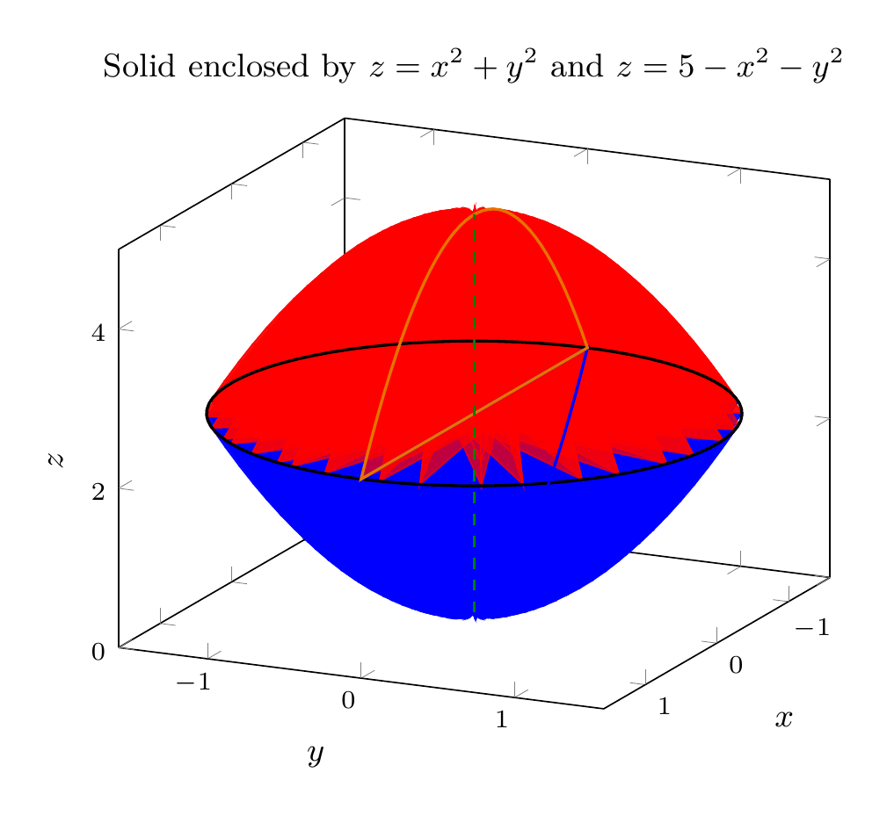
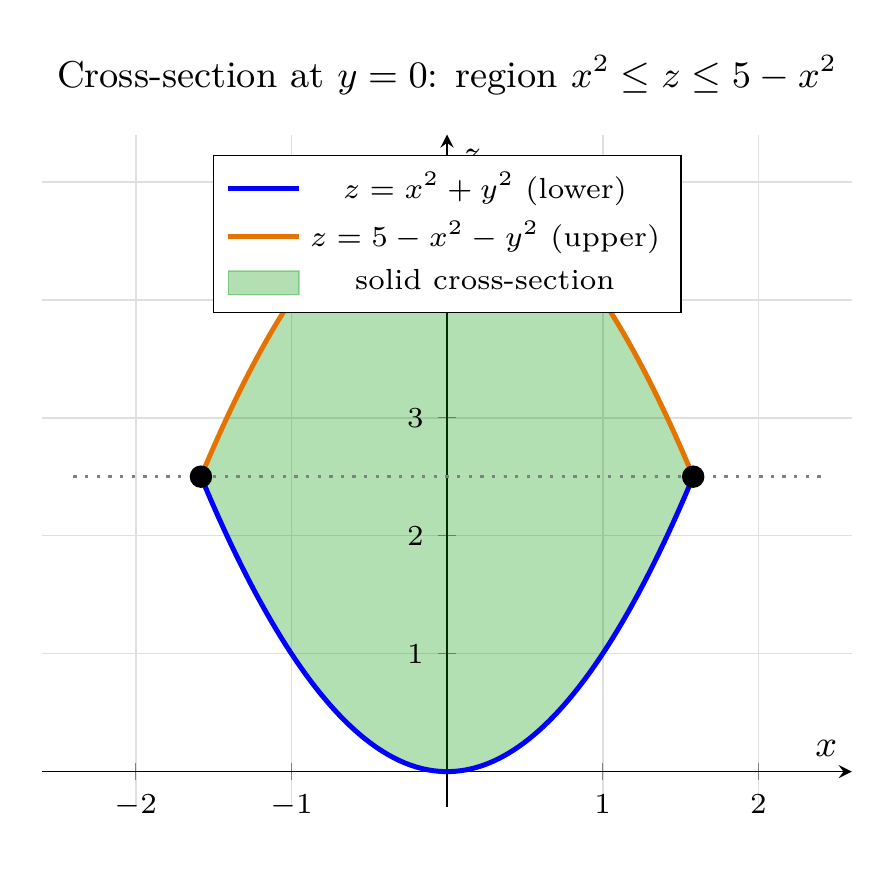

Please solve the problem in the following image.
(Image `20260928_233817_262964_utc_0800_0.png`. Alt text: Image: human_20260928_233817_262964_utc_0800)
20260928_233817_262964_utc_0800_0.png
End of problem
Answer
# Solid Enclosed by $z = x^2+y^2$ and $z = 5-x^2-y^2$
## Step 1: Understand the two surfaces
Both surfaces are circular paraboloids with axis along the $z$-axis:
- **Lower bowl (opening upward):** $z = x^2+y^2$, vertex at the origin $(0,0,0)$.
- **Upper cap (opening downward):** $z = 5-x^2-y^2$, vertex at $(0,0,5)$.
The solid lies **between** them: for each $(x,y)$ in a suitable disk, $x^2+y^2 \leq z \leq 5-x^2-y^2$.
## Step 2: Find the curve of intersection
Set the two heights equal:
$$
x^2+y^2 = 5 - x^2 - y^2
\;\Longrightarrow\;
2(x^2+y^2) = 5
\;\Longrightarrow\;
x^2+y^2 = \frac{5}{2}.
$$
So the surfaces intersect along the **circle**
$$
r = \sqrt{\tfrac{5}{2}} = \frac{\sqrt{10}}{2} \approx 1.5811,\qquad z = \frac{5}{2}.
$$
The solid is a lens-shaped region symmetric about the $z$-axis.
## Step 3: The 3D picture (graphing-device output)
The solid enclosed by the paraboloids is shown below: the blue lower bowl $z=x^2+y^2$ and the orange upper cap $z=5-x^2-y^2$ meet along the black circle of radius $\sqrt{5/2}$ at height $z = 5/2$. The green dashed segment marks the $z$-axis, and the colored slice curves show the cross-section in the plane $y=0$.
---
\documentclass[border=10pt]{standalone}
\usepackage{pgfplots}
\pgfplotsset{compat=1.18}
\begin{document}
\begin{tikzpicture}
\begin{axis}[
view={115}{20},
xlabel={$x$}, ylabel={$y$}, zlabel={$z$},
zmin=0, zmax=5,
title={Solid enclosed by $z=x^2+y^2$ and $z=5-x^2-y^2$},
tick label style={font=\scriptsize},
label style={font=\small},
title style={font=\small},
]
% Lower paraboloid z = r^2
\addplot3[surf, shader=flat, opacity=0.75, point meta=0,
domain=0:1.5811, y domain=0:360, samples=20, samples y=40]
({x*cos(deg(y))}, {x*sin(deg(y))}, {x^2});
% Upper paraboloid z = 5 - r^2
\addplot3[surf, shader=flat, opacity=0.75, point meta=1,
domain=0:1.5811, y domain=0:360, samples=20, samples y=40]
({x*cos(deg(y))}, {x*sin(deg(y))}, {5-x^2});
% Intersection circle at z = 2.5
\addplot3[black, thick, domain=0:360, samples=80, variable=\t]
({1.5811*cos(\t)}, {1.5811*sin(\t)}, {2.5});
% Slice curves at y=0
\addplot3[blue, thick, domain=-1.5811:1.5811, samples=40] ({x}, {0}, {x^2});
\addplot3[orange!90!black, thick, domain=-1.5811:1.5811, samples=40] ({x}, {0}, {5-x^2});
% z-axis
\addplot3[green!50!black, dashed, thick] coordinates {(0,0,0) (0,0,5)};
\end{axis}
\end{tikzpicture}
\end{document}

pgfplots_0.png
---
## Step 4: The 2D cross-section (how you reason about the solid)
Cutting the solid with the plane $y=0$ shows exactly how a human solver pictures it: the parabolas $z=x^2$ (lower boundary, blue) and $z=5-x^2$ (upper boundary, orange) meet at $x=\pm\sqrt{5/2}$, $z=5/2$. The shaded lens is the cross-section of the solid; revolving this lens about the $z$-axis generates the full 3D solid.
---
\documentclass[border=10pt]{standalone}
\usepackage{pgfplots}
\pgfplotsset{compat=1.18}
\usepgfplotslibrary{fillbetween}
\begin{document}
\begin{tikzpicture}
\begin{axis}[
xlabel={$x$}, ylabel={$z$},
xmin=-2.6, xmax=2.6, ymin=-0.3, ymax=5.4,
axis lines=middle,
grid=both,
grid style={gray!25},
title={Cross-section at $y=0$: region $x^2 \leq z \leq 5-x^2$},
tick label style={font=\scriptsize},
label style={font=\small},
title style={font=\small},
legend style={font=\scriptsize, at={(0.5,0.97)}, anchor=north},
domain=-1.5811:1.5811, samples=100,
]
% Boundary curves with names
\addplot[name path=lower, blue, very thick] (x, {x^2});
\addplot[name path=upper, orange!90!black, very thick] (x, {5-x^2});
% Fill between the curves
\addplot[green!60!black, opacity=0.3] fill between[of=lower and upper];
% Intersection points
\addplot[only marks, mark=*, mark size=2.5pt, black]
coordinates {(-1.5811, 2.5) (1.5811, 2.5)};
% Dashed line z = 5/2
\addplot[gray, dotted, thick, domain=-2.4:2.4] (x, {2.5});
\legend{$z=x^2+y^2$ (lower), $z=5-x^2-y^2$ (upper), solid cross-section}
\end{axis}
\end{tikzpicture}
\end{document}

pgfplots_1.png
---
## Step 5: Description of the solid (bonus: its volume)
In **cylindrical coordinates** ($x=r\cos\theta$, $y=r\sin\theta$) the solid is described by
$$
0 \leq \theta \leq 2\pi,\qquad
0 \leq r \leq \sqrt{\tfrac{5}{2}},\qquad
r^2 \leq z \leq 5-r^2.
$$
Its volume, a natural follow-up question for such a sketch, is
$$
V = \int_0^{2\pi}\!\!\int_0^{\sqrt{5/2}}\!\!\int_{r^2}^{5-r^2} r\, dz\, dr\, d\theta
= 2\pi \int_0^{\sqrt{5/2}} r\bigl[(5-r^2)-r^2\bigr]\, dr
= 2\pi\left[\frac{5r^2}{2} - \frac{r^4}{2}\right]_0^{\sqrt{5/2}}
= \frac{25\pi}{4}
$$
(verified by symbolic computation: $25\pi/4 \approx 19.635$).
## Summary
- The surfaces meet at the circle $r=\sqrt{5/2}$, $z=5/2$.
- The solid is the lens-shaped region between the two paraboloids, symmetric about the $z$-axis, with flat circular cross-sections of radius $r$ where $r^2 \leq z \leq 5-r^2$.
- Its enclosed volume is $\boxed{\dfrac{25\pi}{4}}$.